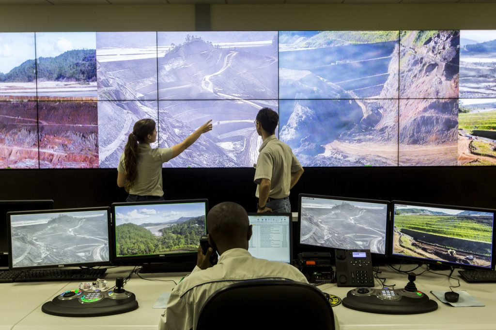
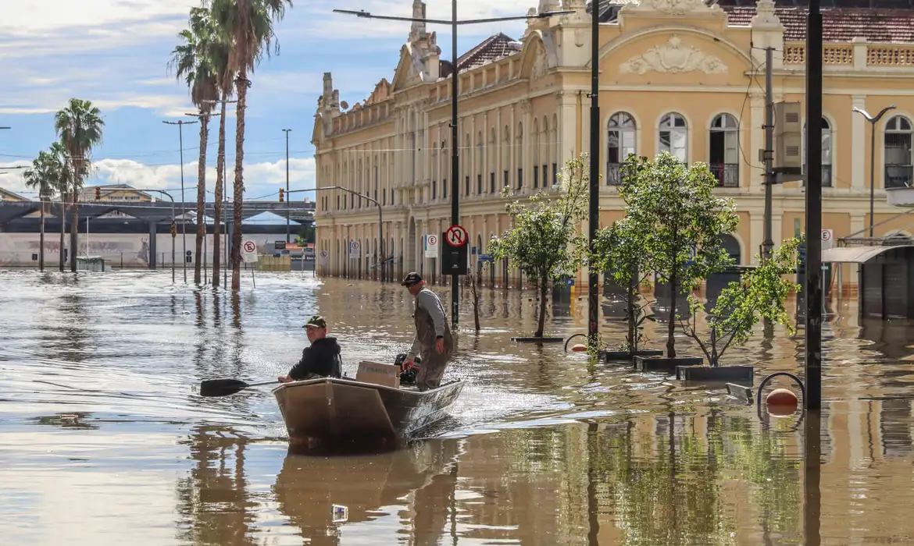

🛠️ 1. Planejamento Urbano Inteligente e Inclusivo
A resolução de tragédias recorrentes como enchentes e deslizamentos começa com políticas públicas de urbanização responsável. É essencial revisar o modelo de ocupação do solo, impedindo a construção em áreas de risco e promovendo reassentamento seguro para populações vulneráveis.
Além disso, investimentos em infraestrutura básica de drenagem urbana são urgentes. Com mais de 55% das áreas de risco sem esse serviço, é necessário priorizar obras que incluam bueiros inteligentes, canais de escoamento e zonas de amortecimento de água.
Municípios devem integrar zonas verdes permeáveis em seus planos diretores, contribuindo para a absorção da água da chuva e reduzindo o risco de alagamentos.

📡 2. Tecnologia e Monitoramento em Tempo Real
O Brasil precisa transformar a maneira como lida com desastres naturais através do uso de tecnologia de ponta. Sistemas de alerta precoce — como os utilizados com sucesso no Japão e na Holanda — podem ser implantados em larga escala no país, conectando redes de sensores em áreas críticas com sirenes, aplicativos e mensagens SMS para evacuação imediata.
O fortalecimento de instituições como o CEMADEN é estratégico: ampliar seu orçamento, recursos humanos e integração com defesas civis locais pode salvar milhares de vidas.
Além disso, plataformas digitais com dados abertos e atualizados sobre áreas de risco, histórico de enchentes e rotas de fuga devem ser desenvolvidas e popularizadas entre a população.

💼 3. Educação Comunitária e Participação Cidadã
A tecnologia e a infraestrutura são fundamentais, mas a prevenção também passa pela educação e mobilização da sociedade. Programas de formação comunitária em gestão de riscos podem preparar moradores de áreas vulneráveis para agirem de forma rápida e organizada em momentos de crise.
Escolas, centros comunitários e postos de saúde devem funcionar como hubs de conscientização, ensinando desde crianças a identificar sinais de risco até adultos a montarem kits de emergência.
Além disso, governos podem promover consultas públicas e plataformas participativas para que a população contribua com dados locais, ajudando no mapeamento de risco e cobrando ações do poder público com base em evidências.